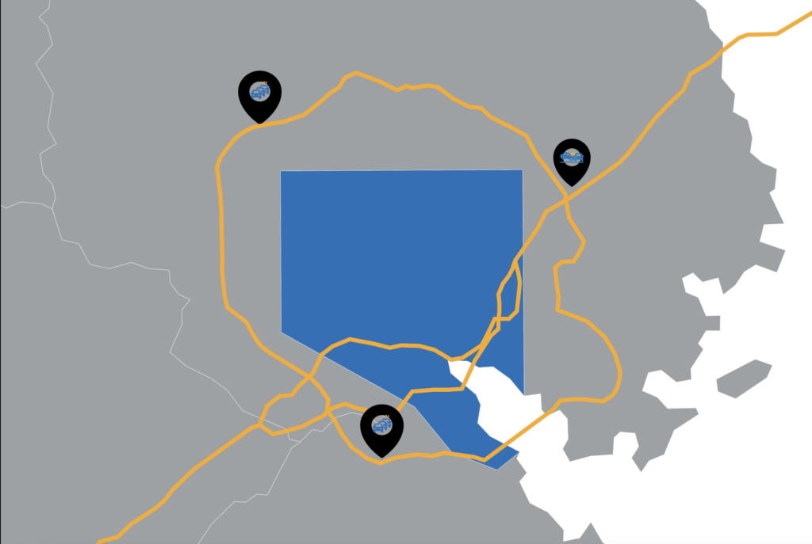

BY APRIL QUEVEDO - October 29, 2024
BALTIMORE ⸺ When the Francis Scott Key Bridge collapsed on March 26, officials warned the loss of the stretch of roadway would wreak havoc on the region.
The loss of the Key Bridge effectively disconnected the Baltimore Beltway (I-695), a 51-mile loop, in the southeast, rendering key travel routes and communities in the eastern part of Baltimore inaccessible to drivers without extensive additional travel.
The bridge served as a vital access point for traffic into and out of the Port of Baltimore. Trucks carrying hazardous materials that used the bridge to cross the harbor are now forced to go around the beltway in the opposite direction (a 35 mile detour) due to cargo restrictions through Baltimore City traffic tunnels – though not all hazmat vehicle operators adhere to commodity restrictions, as reported by the Baltimore Banner in July.
Now, alternative routes are bearing the brunt of a logistical burden.
“The tunnel crossings are what’s getting slammed,” said Ed Stylc, a transportation planner at the Baltimore Metropolitan Council (BMC), a nonprofit that works with the region’s elected executives to plan and develop programs that help improve quality of life and economic vitality.
To better understand the impacts of the bridge collapse Capital News Service undertook an analysis of traffic accident and congestion data. The analysis includes a review of crash report data maintained by the Maryland State Police (MSP) and traffic congestion reports released by the BMC in the wake of the bridge collapse.
Over 34,000 vehicles traveled on the Key Bridge daily prior to its collapse – 10% of those vehicles being commercial trucks.
The bridge collapse meant that traffic needed to be diverted. The Maryland Department of Transportation (MDOT) suggested alternate routes including I-95, I-895 and the remaining portion of I-695. Unsurprisingly, that has increased congestion along those routes.
The BMC found that Baltimore area traffic congestion along certain corridors of major highways has increased by at least 25% since the collapse of the Francis Scott Key Bridge in March. And its the Baltimore area tunnels that are truly shouldering the load.
The Baltimore Harbor tunnel and Fort McHenry tunnel have absorbed most of the bridge’s traffic. With traffic now being diverted to the remaining harbor crossings, northbound travel times through both tunnels are up an average of almost 200% and 100% respectively, according to BMC congestion data reports.
“That kind of leads to the conversation about how important the bridge was,” said Todd Lang, director of transportation planning at BMC, “Even though it was one of the harbor crossings that had less traffic, closing the bridge just meant additional pressures on the tunnels.”
According to a Capital News Service analysis of crash report data maintained by the Maryland State Police (MSP), I-695 typically accounts for over half of all traffic accidents between the three interstates. With a portion of the beltway out of commission until at least Fall 2028, accidents on I-695 have increased slightly – about 3%.
MSP recorded 2,004 reports along suggested alternate routes in the Baltimore metro area since March 26 compared to 1,901 reports in the same time frame a year prior – a 5% increase.
May saw the largest increase in traffic accidents along those same routes – roughly 34% year-over-year, while peak summer months June and July saw an average of 9% decline in accidents.
“Many factors play a role in the rate of crashes on Maryland highways,” the Maryland Transportation Authority (MDTA) explained. With less than a year of data available, they are not able to speculate on the changes in crash rates along tolled roads around Baltimore.
In a statement to CNS, Nicole Monroe with the MDTA said the agency continues to “monitor commute times along the alternative routes, adjust signal timing when appropriate, and clear crashes from travel lanes as quickly as possible to mitigate congestion.”
The average amount of time to clear a crash from Maryland highways is 20 to 30 minutes, according to the MDTA. The time it takes the MDTA’s Emergency Response Team to clear traffic crashes from Maryland highways can vary from 5 minutes to over an hour depending on location and severity or complexity.
A coordinated effort to mitigate traffic congestion between various transportation agencies, the Baltimore Metropolitan Council and local authorities in Baltimore City and its surrounding counties began after the collapse of the Key Bridge.
Until recently, weekly virtual meetings and calls were held to discuss current conditions and to implement enhancements, including signal upgrades, dynamic messaging or static signage and construction coordination. Meetings are now held as needed.
“It’s been just a big coordination effort making sure that if anything’s happening out there, that all the partners know about it and are trying to help each other out,” said Lang.